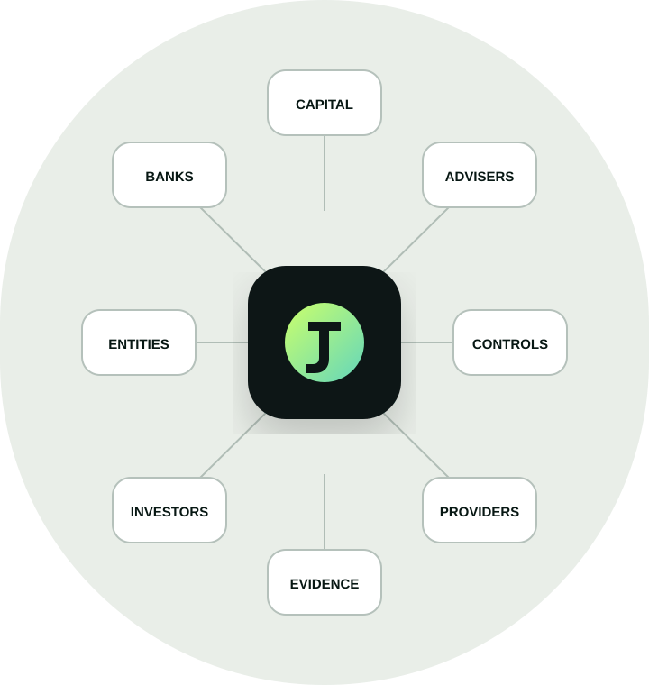
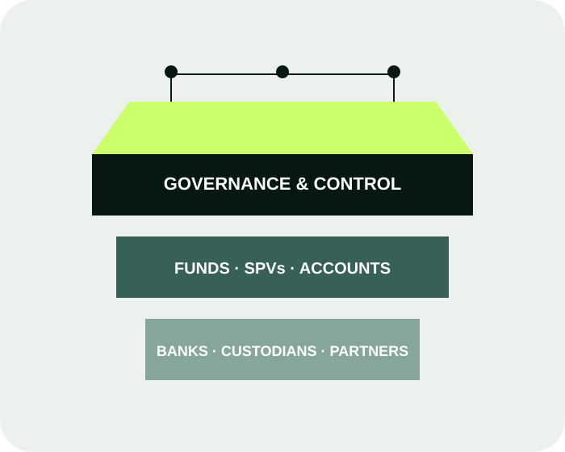

Treasury Command
Multi-entity cash visibility, controlled payment instructions, forecasting, reconciliation and exception handling.
 Iuvo Capital
Iuvo CapitalInfrastructure for private capital
A controlled operating layer for complex funds, SPVs and structured-credit programmes—connecting treasury, governance, compliance evidence and partner workflows.

One operating picture
The operating problem
Private capital operations cross entities, jurisdictions, banks, advisers and service providers. The result is fragmented data, slow approvals and difficult audit preparation.
Iuvo creates a shared, permissioned workflow around the regulated institutions and specialists already serving the structure.
Multi-entity cash visibility, controlled payment instructions, forecasting, reconciliation and exception handling.
Entity records, mandates, documents, obligations and service-provider work in one governed environment.
Role-based access, maker-checker approvals, committee evidence and immutable operational history.
Investor workflows, capital activity, covenants, collateral and structured-credit monitoring.
Operator-built
Iuvo combines platform discipline with private-market operating experience. The result is infrastructure designed around the work teams actually perform—not abstract feature lists.
Why Iuvo
Clear boundaries
Workflow, permissions, data, approvals, evidence and reporting.
Custody, payments, execution, verification and regulated advice where required.
Build a stronger operating model